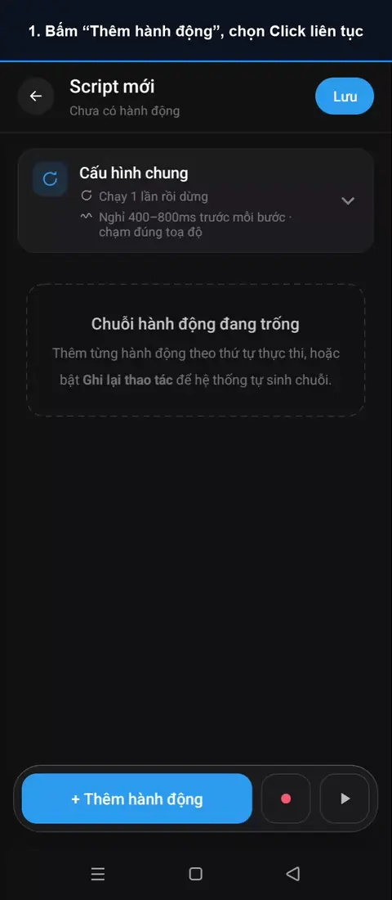
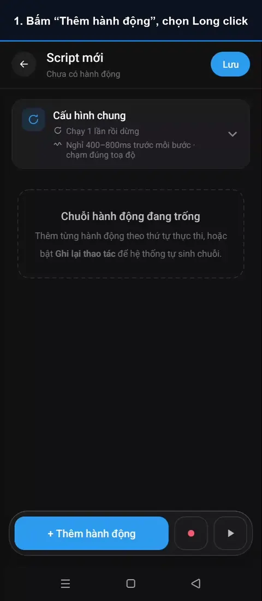
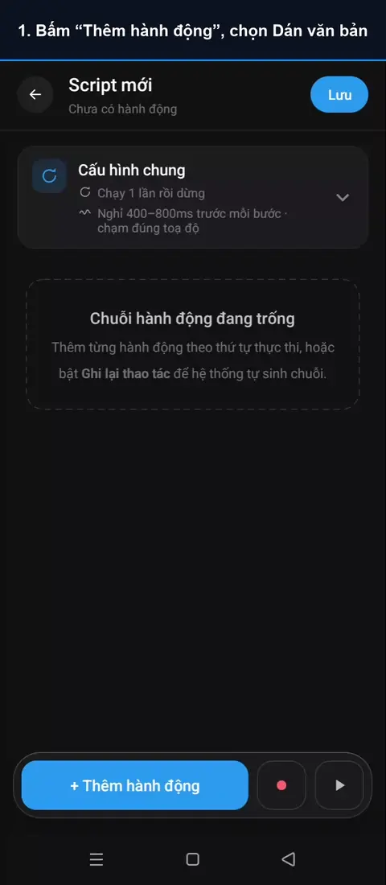
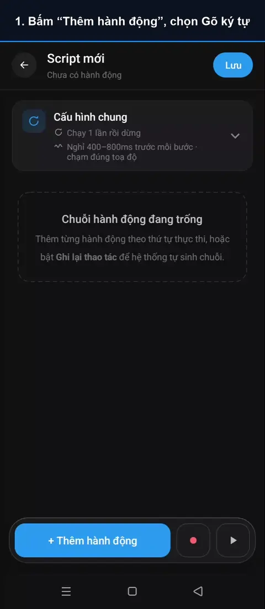
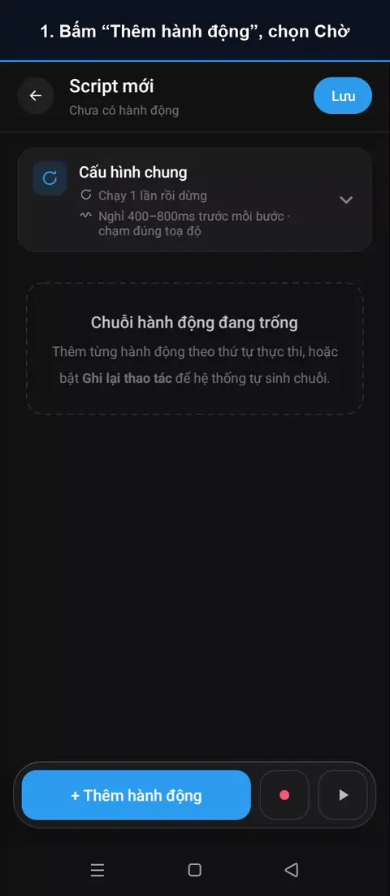
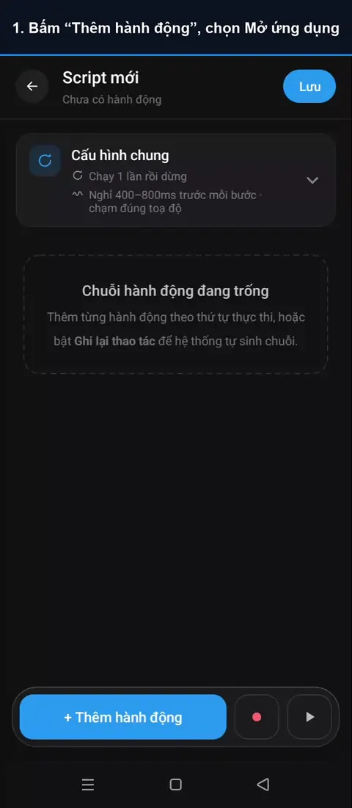
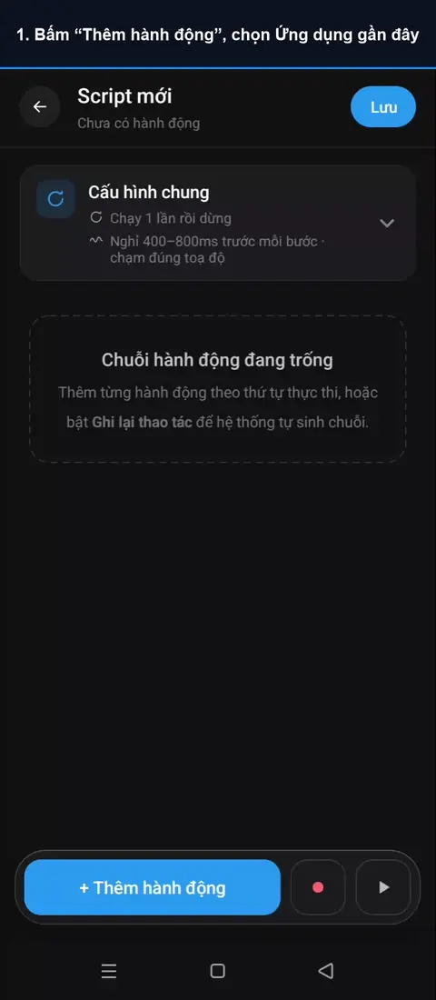
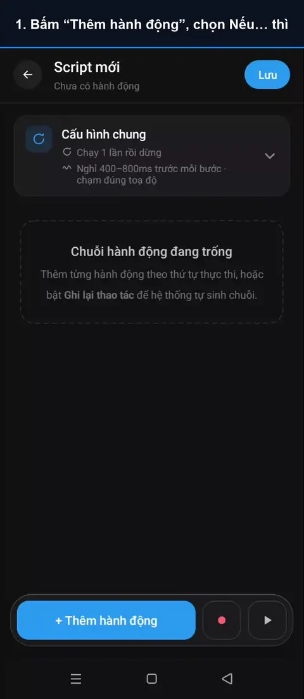

Hướng dẫn sử dụng
Mỗi hành động có một đoạn video quay trên điện thoại thật, dùng một ứng dụng mẫu để thấy rõ kết quả. Chỗ được chạm sẽ sáng lên để bạn dễ theo dõi. Hành động có nhãn PRO thuộc gói AutoGest Pro.
- Bạn chạm
- AutoGest tự chạm khi chạy tập lệnh
Chạm và cử chỉ
Chờ và nhận diện
Hệ thống
Luồng tập lệnh
Click
Hành động cơ bản nhất: AutoGest chạm đúng một điểm bạn đã chọn trên màn hình.

- Bấm “Thêm hành động”, chọn Click
- Bấm “Thêm tọa độ”
- Mở ứng dụng, kéo tâm ngắm tới điểm cần click
- Bấm OK để lưu tọa độ
- Quay lại AutoGest, tọa độ đã được điền
- Bấm Chạy thử rồi mở ứng dụng
▶ AutoGest tự click đúng điểm đã chọn
- Toạ độ được quy đổi theo kích thước màn hình, nên tập lệnh vẫn chạm đúng chỗ khi mở trên máy có màn hình khác.
- Ở thẻ Cấu hình chung, bạn đặt khoảng nghỉ giữa các bước và độ lệch chạm để thao tác tự nhiên như người thật.
- Nút đổi chỗ theo từng lần mở? Dùng Click ảnh hoặc Click chữ để AutoGest tự tìm nút trước khi chạm.
Click liên tục
Chạm liên tục vào một điểm với tốc độ từ 1 đến 20 lần mỗi giây — hợp với game cần bấm nhanh.

- Bấm “Thêm hành động”, chọn Click liên tục
- Bấm “Thêm tọa độ”
- Mở ứng dụng, đặt tâm ngắm lên nút cần bấm
- Bấm OK để lưu tọa độ
- Quay lại AutoGest, chọn tốc độ và số lần
- Bấm Chạy thử rồi mở ứng dụng
▶ AutoGest bấm 30 lần, 10 lần mỗi giây
- Dừng theo số lần, theo thời gian, hoặc chạy tới khi bạn bấm Dừng.
- Trên 10 lần/giây là nhanh hơn tay người; ứng dụng có thể coi là bất thường.
- Bật Nhịp tự nhiên để khoảng cách giữa các lần chạm lệch nhẹ như người bấm thật.
Long click
Chạm và giữ một điểm trong khoảng thời gian bạn chọn — dùng cho nút cần nhấn giữ, menu ngữ cảnh, kéo chọn.

- Bấm “Thêm hành động”, chọn Long click
- Bấm “Thêm tọa độ”
- Mở ứng dụng, đặt tâm ngắm lên nút cần giữ
- Bấm OK để lưu tọa độ
- Quay lại AutoGest, chọn thời gian giữ
- Bấm Chạy thử rồi mở ứng dụng
▶ AutoGest giữ nút 2 giây, khoá mở
- Chọn thời gian giữ trên thẻ; với nút “giữ để xác nhận”, đặt dài hơn thời gian ứng dụng yêu cầu một chút.
Vuốt
Kéo ngón tay từ điểm bắt đầu tới điểm kết thúc — vuốt mở khoá, kéo thanh trượt, lướt trang.
- Bấm “Thêm hành động”, chọn Vuốt
- Chọn điểm bắt đầu
- Quay lại, chọn điểm kết thúc
- Quay lại, chọn thời gian vuốt
- Bấm Chạy thử rồi mở ứng dụng
▶ AutoGest vuốt từ điểm đầu tới điểm cuối
- Thời lượng ngắn là vuốt nhanh (lướt), thời lượng dài là kéo chậm (kéo thả, thanh trượt).
Cuộn
Cuộn danh sách lên, xuống, sang trái hoặc phải bằng một cú vuốt qua giữa màn hình — không phải chọn toạ độ.
- Bấm “Thêm hành động”, chọn Cuộn
- Chọn hướng cuộn và thời gian
- Bấm Chạy thử rồi mở ứng dụng
▶ AutoGest vuốt qua giữa màn hình để cuộn
- Kết hợp với Lặp tới khi để cuộn cho tới khi thấy nội dung cần tìm.
Dán văn bản
Chạm vào ô nhập rồi điền nguyên đoạn chữ bạn đã soạn — nhanh, đúng dấu tiếng Việt.

- Bấm “Thêm hành động”, chọn Dán văn bản
- Bấm “Thêm tọa độ”, đặt tâm ngắm vào ô nhập
- Quay lại, nhập nội dung cần dán
- Bấm Chạy thử rồi mở ứng dụng
▶ AutoGest dán cả đoạn chữ vào ô nhập
- Ngăn nhiều nội dung bằng
||để mỗi lần chạy AutoGest chọn ngẫu nhiên một nội dung. - Ứng dụng chặn dán? Dùng Gõ ký tự để chạm từng phím như người gõ.
Gõ ký tự PRO
Ghi lại từng lần chạm phím trên bàn phím, khi chạy AutoGest chạm lại đúng các phím đó với nhịp gõ của bạn.

- Bấm “Thêm hành động”, chọn Gõ ký tự
- Chạm vào ô ghi phím rồi gõ trên bàn phím
- Bấm Xong để lưu các lần chạm phím
- Chọn ô cần gõ trong ứng dụng (tuỳ chọn)
- Quay lại, bấm Chạy thử rồi mở ứng dụng
▶ AutoGest chạm vào ô rồi gõ lại từng phím
- Dùng cùng một bàn phím (và cùng kiểu ô nhập) lúc ghi và lúc chạy, vì AutoGest chạm theo vị trí phím.
- Sau khi gõ, AutoGest đọc lại ô nhập; chữ không khớp thì bước báo lỗi và không chạm các phím còn lại.
- Không cần chạm từng phím? Bấm Chuyển sang Dán văn bản trên thẻ.
Chờ
Dừng tập lệnh một khoảng thời gian (mili giây) trước khi sang bước sau — đợi ứng dụng tải xong, đợi hiệu ứng chạy hết.

- Bấm “Thêm hành động”, chọn Chờ
- Nhập thời gian chờ (ms)
- Thêm một bước Click để thấy khoảng chờ
- Quay lại, đặt lặp tập lệnh 2 vòng
- Bấm Chạy thử rồi mở ứng dụng
▶ Hai lần bấm cách nhau 3 giây chờ + nhịp nghỉ
- Ngoài bước Chờ, mỗi bước còn có nhịp nghỉ ngẫu nhiên đặt ở Cấu hình chung.
- Không biết phải chờ bao lâu? Chờ ảnh, Chờ màu chờ đúng tới lúc màn hình sẵn sàng.
Chờ ảnh PRO
Đợi tới khi một hình xuất hiện (hoặc biến mất) trên màn hình rồi mới chạy bước sau. Hình được cắt ngay từ màn hình.
- Bấm “Thêm hành động”, chọn Chờ ảnh
- Bấm “Chọn ảnh”, chọn Cắt từ màn hình
- Mở màn hình có hình, bấm Chụp, khoanh vùng
- Quay lại, thêm bước Click vào chỗ hình hiện ra
- Quay lại, bấm Chạy thử rồi mở ứng dụng
▶ AutoGest đợi thấy hộp quà rồi mới chạy bước Click
- Khoanh vùng ôm sát hình, tránh phần nền hay đổi.
- Chọn Biến mất để chờ màn hình tải, hộp thoại đóng xong.
- Dùng được cả trong game, vì AutoGest so ảnh chứ không đọc cấu trúc ứng dụng.
Chờ màu PRO
Đợi một điểm trên màn hình có đúng màu bạn chọn — đèn chuyển xanh, nút sáng lên, thanh năng lượng đầy.
- Bấm “Thêm hành động”, chọn Chờ màu
- Bấm “Thêm tọa độ”, đặt tâm ngắm lên điểm có màu cần chờ
- Quay lại: AutoGest đã đọc sẵn màu tại điểm đó
- Thêm bước Click vào nút “Đi thôi”
- Quay lại, bấm Chạy thử rồi mở ứng dụng
▶ AutoGest đợi đèn chuyển xanh rồi mới bấm “Đi thôi”
- Chọn điểm lúc màu cần chờ đang hiện: AutoGest đọc sẵn màu tại điểm đó.
- Chọn Đổi màu để chờ điểm đó thôi mang màu hiện tại.
Click ảnh PRO
Tìm một hình trên màn hình rồi chạm vào giữa hình — nút ở đâu AutoGest cũng tìm được, kể cả trong game.
- Bấm “Thêm hành động”, chọn Click ảnh
- Bấm “Chọn ảnh”, chọn Cắt từ màn hình
- Mở màn hình có hình cần tìm, bấm Chụp
- Kéo khung ôm sát hình rồi bấm OK
- Quay lại, bấm Chạy thử rồi mở ứng dụng
▶ AutoGest chờ hộp quà hiện ra rồi chạm vào
- Đặt Thời gian chờ tối đa đủ lâu nếu hình xuất hiện muộn.
- Hạ Độ khớp tối thiểu khi hình hơi thay đổi giữa các lần (bóng, viền sáng).
Click chữ
Tìm một đoạn chữ trên màn hình rồi chạm vào — không cần biết trước nút nằm ở đâu.
- Bấm “Thêm hành động”, chọn Click chữ
- Nhập chữ hiện trên nút cần bấm
- Bấm Chạy thử rồi mở ứng dụng
▶ Nút hiện ở đâu, AutoGest cũng tìm chữ rồi chạm
- Chỉ cần chứa đoạn chữ, không phân biệt hoa thường.
- Game vẽ bằng đồ hoạ không có chữ để đọc: dùng Click ảnh.
Click Node PRO
Chọn đúng một phần tử trên cây Accessibility của ứng dụng (kể cả nút chỉ có hình), khi chạy AutoGest tìm lại phần tử đó rồi chạm.
- Bấm “Thêm hành động”, chọn Click Node
- Bấm “Chọn node”, mở ứng dụng rồi bấm Chụp
- Chạm vào nút cần bấm rồi bấm “Chọn node”
- Quay lại, chọn cách tìm node
- Bấm Chạy thử rồi mở ứng dụng
▶ AutoGest tìm đúng nút tim rồi chạm
- Tìm theo
xpath(mặc định),resource-id,texthoặccontent-desc— chọn thứ ổn định nhất với ứng dụng. - Game không có cây node: dùng Click ảnh.
Chờ và nhận diện thông báo PRO
Chờ một thông báo có cụm chữ bạn chọn, đọc to phần bạn muốn rồi chạy bước sau. Cách Biến động số dư đọc to số tiền từ tin ngân hàng.
- Thêm hành động Chờ và nhận diện thông báo
- Bấm “Chọn thông báo mẫu”, chọn một tin
- Chạm chữ đầu rồi chữ cuối của cụm cần chờ
- Chọn cách đọc to, bấm “Dùng mẫu này”
- Thêm bước Click vào nút “Xác nhận đơn”
- Quay lại, bấm Chạy thử rồi mở ứng dụng
- Khi có khách đặt hàng…
▶ AutoGest đọc to tin rồi bấm “Xác nhận đơn”
- Cần quyền Truy cập thông báo; ứng dụng chỉ xin khi bạn chọn thông báo mẫu.
- Tập lệnh chỉ có bước chờ thông báo chạy nền được, kể cả lúc máy khoá — thành loa báo đơn, báo tiền về.
- Mẫu chỉ lưu cụm chữ nhận biết, không lưu nội dung tin.
Mở ứng dụng
Mở một ứng dụng đã cài và chờ nó lên màn hình — tập lệnh tự đi tới đúng chỗ, bạn không phải mở tay.

- Bấm “Thêm hành động”, chọn Mở ứng dụng
- Bấm “Chọn app”, chọn ứng dụng cần mở
- Bấm Chạy thử, không cần tự mở ứng dụng
▶ AutoGest tự mở ứng dụng đã chọn
- Ứng dụng đang chạy nền được đưa lên nguyên trạng, không khởi động lại.
Quay lại
Bấm phím Quay lại của hệ thống, như bạn tự bấm — đóng màn chi tiết, đóng bàn phím, lùi một bước.
- Bấm “Thêm hành động”, chọn Quay lại
- Bấm Chạy thử rồi mở ứng dụng
- Trong lúc đếm ngược, mở một tin
▶ AutoGest bấm Quay lại, về danh sách tin
- Không cần toạ độ, chạy đúng trên mọi máy.
Màn hình chính
Về màn hình chính của máy. Đoạn màn hình chính trong video được làm mờ để giữ riêng tư.
- Bấm “Thêm hành động”, chọn Màn hình chính
- Bấm Chạy thử rồi mở ứng dụng
▶ AutoGest về màn hình chính (làm mờ cho riêng tư)
- Hay dùng ở cuối tập lệnh, hoặc trước bước Mở ứng dụng.
Ứng dụng gần đây
Mở danh sách ứng dụng gần đây để chuyển qua lại giữa các ứng dụng. Đoạn danh sách trong video được làm mờ để giữ riêng tư.

- Bấm “Thêm hành động”, chọn Ứng dụng gần đây
- Bấm Chạy thử rồi mở ứng dụng
▶ AutoGest mở danh sách gần đây (làm mờ cho riêng tư)
- Kết hợp với Click để chọn một thẻ trong danh sách.
Nếu… thì PRO
Kiểm tra màn hình (có ảnh, có màu, có chữ, hay lượt lặp thứ mấy) rồi chạy nhánh Thì hoặc nhánh Không thì.

- Bấm “Thêm hành động”, chọn Nếu… thì
- Chọn kiểm tra Chữ, nhập chữ cần thấy
- Tắt nhánh “Không thì”, bấm Xong
- Thêm vào nhánh Thì: Click nút đóng (X)
- Quay lại, bấm Chạy thử rồi mở ứng dụng
▶ Thấy chữ “Quảng cáo” nên AutoGest bấm nút đóng
- Chờ tối đa là thời gian chờ điều kiện xuất hiện; hết giờ mà chưa thấy thì coi là Sai.
- Bật Đảo điều kiện để chạy nhánh Thì khi không thấy.
- Khối chỉ có một cấp. Cần lồng sâu hơn thì tách phần bên trong thành tập lệnh riêng rồi dùng Gọi tập lệnh.
Lặp tới khi PRO
Chạy lại các bước trong vòng cho tới khi màn hình có ảnh, màu hoặc chữ bạn chọn. Điều kiện được kiểm trước mỗi lượt.
- Bấm “Thêm hành động”, chọn Lặp tới khi
- Dừng khi thấy Chữ: nhập chữ báo đã xong
- Thêm vào vòng lặp: Click nút “Tải thêm”
- Quay lại, bấm Chạy thử rồi mở ứng dụng
▶ AutoGest bấm “Tải thêm” tới khi thấy “Đã hết tin”
- Số lượt luôn có giới hạn (mặc định 20); hết lượt mà điều kiện vẫn sai thì bỏ vòng và báo bước lỗi.
- Thấy điều kiện ngay từ đầu thì thân vòng không chạy lần nào.
Gọi tập lệnh PRO
Chạy một tập lệnh khác ngay tại bước này rồi quay về — dựng một lần, dùng lại ở nhiều nơi.
- Bấm “Thêm hành động”, chọn Gọi tập lệnh
- Bấm “Chọn tập lệnh”, chọn tập lệnh cần gọi
- Chọn số lần gọi
- Bấm Chạy thử rồi mở ứng dụng
▶ AutoGest chạy tập lệnh “Bấm nút” 3 lần
- Tập lệnh được gọi giữ nguyên bản gốc: sửa một lần, mọi nơi dùng lại đều đổi theo.
- Gọi lồng tối đa 5 cấp; vòng gọi lặp vô hạn bị chặn.